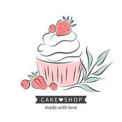

INICIO
PEDIDOS
RECETARIO
Acerca de Nosotros
Alfajor
El producto esta constituido por dos o más galletitas, galletas o masa horneada, separadas entre sí por rellenos como mermeladas, jaleas, u otros dulces, pudiendo tener un baño o cobertura exterior.
Chocorelleno
Producto de confitería formado por una parte exterior de chocolate de cualquier variedad y cuya parte interior está formada por una pasta de frutos secos, licores o diferentes productos de confitería.
Burritos
consistente en una masa de pasta a base de harina de trigo, agua y sal, de forma alargada y acanalada que, una vez frita y bien dorada, se trocea y acompaña con azúcar. Se acostumbran a tomar durante el desayuno o la merienda acompañados de chocolate.
Conitos
La forma del cuerno se hace enrollando tiras superpuestas de pastelería alrededor de un molde cónico, que puede ser metálico o de silicona o hacerse con papel de hornear, que puede contener en su interior barquillo helado, para dar forma.
Empanadas
Es una masa rellena con carnes, verduras o frutas cocida al horno o frita en aceite o grasa. Su nombre proviene del castellano empanar, cuya primera acepción es «encerrar algo en masa o pan para cocerlo en el horno».
Galletas
Pasta compuesta de harina, azúcar y a veces huevo, manteca o confituras diversas, que, dividida en trozos pequeños y moldeados o modelados en forma varia, se cuece al horno.
Trufas
ver detallestienen un aspecto algo redondeado aunque más bien irregular. Su tonalidad externa es oscura, mientras que su interior es blanquecino o grisáceo.
Pan
Es un alimento esencial en muchas sociedades. Aunque existen múltiples recetas, lo habitual es que se emplee harina de trigo mezclada con agua y sal. El uso adicional de la levadura hace que la masa, antes de llegar al horno, fermente y gane volumen. De esta forma, el pan ya horneado resulta tierno y esponjoso.
Ojitos de buey
Estas masitas de manteca rellenas con dulce de la fruta que más te guste son deliciosas y vistosas. Rápidas y fáciles de preparar, y con ingredientes que solemos tener en nuestra alacena. Pueden estar rellenas de dulce de leche con el centro de dulce, o simplemente repletas de dulce. Cada uno a su manera.
Factura
Es una masa para llenar de almíbar y colorantes, las facturas argentinas industriales se ven y huelen de lejos. Se sabe, con producto de mala calidad, por más que se trate de una eminencia en la panadería, poco se puede hacer.
Media Luna
Es una masa para llenar de almíbar y colorantes, las facturas argentinas industriales se ven y huelen de lejos. Se sabe, con producto de mala calidad, por más que se trate de una eminencia en la panadería, poco se puede hacer.
Croasosnt
Masa finamente hojaldrada con un relleno dulce o salado dentro de ella